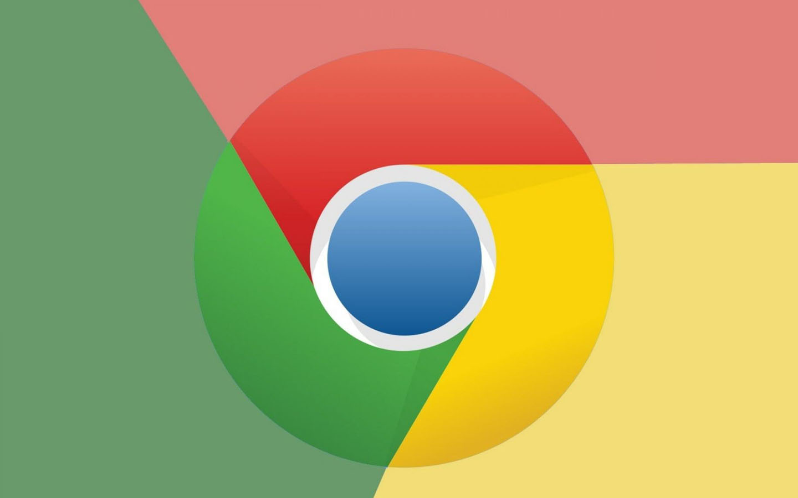

Google Chrome，又称Google浏览器，是一个由Google（谷歌）公司开发的网页浏览器。 该浏览器是基于其他开源软件所撰写，包括WebKit，目标是提升稳定性、速度和安全性，并创造出简单且有效率的使用者界面。
Mozilla Firefox，中文名通常称为“火狐”或“火狐浏览器”，是一个开源网页浏览器， 使用Gecko引擎（非ie内核），支持多种操作系统如Windows、Mac和linux。
Internet Explorer，原称Microsoft Internet Explorer(6版本以前)和Windows Internet Explorer(7，8，9，10版本)， 简称IE，是美国微软公司推出的一款网页浏览器。它采用的排版引擎(俗称内核)为Trident。